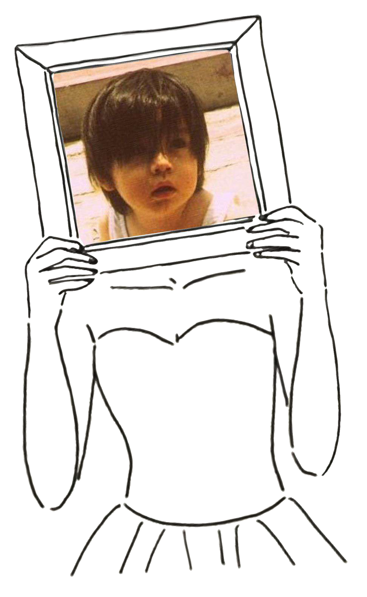
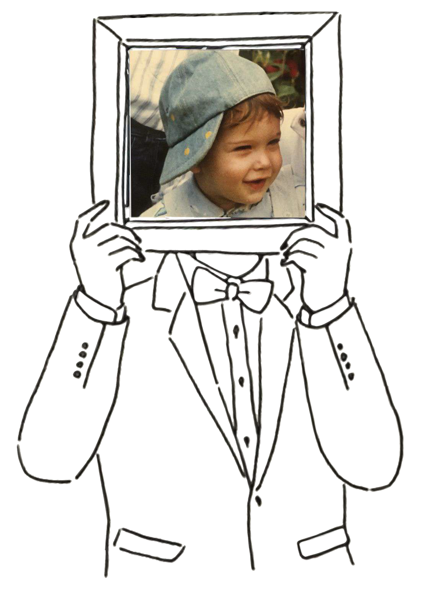

Cronograma

PREPARACIÓN NOVIA MAÑANA BODA
Antes de la ceremonia, queríamos vivir la mañana con calma, rodeados de las personas más importantes para nosotros.
| HORA | DURACIÓN | ACTIVIDAD | LUGAR | PERSONAS |
|---|---|---|---|---|
| 06:00 – 08:15 | 2h15 | Peinado damas de honor | La Judería | Damas de honor (Fiorella + Susana) + Laura (estilista) |
| 07:00 – 08:30 | 1h30 | Maquillaje mamá | Áurea Convento Capuchinos | Mamá + Kinga (maquilladora) |
| 08:15 – 08:30 | 15 min | Traslado caminando | → Capuchinos | Laura (estilista) |
| 08:00 – 08:40 | 40 min | Primera parte peinado novia | Capuchinos | Stephany + Laura (estilista) |
| 08:30 – 10:00 | 1h30 | Maquillaje novia | Capuchinos | Stephany + Kinga (maquilladora) |
| 08:40 – 09:20 | 40 min | Peinado mamá | Capuchinos | Mamá + Laura (estilista) |
| 09:20 – 10:00 | 40 min | Peinado tía | Capuchinos | Tía + Laura (estilista) |
| 10:00 – 10:25 | 25 min | Segunda parte peinado de la Novia | Capuchinos | Stephany + Laura (estilista) |
| 10:25 – 10:30 | 5 min | Colocación inicial velo | Capuchinos | Stephany + Laura (estilista) |
| 10:30 | — | Llegada fotografía + video | Capuchinos | Laura (fotógrafa) + Fernando (videógrafo) |
| 10:30 – 10:45 | 15 min | Fotos íntimas (sin vestido) | Capuchinos | Madre + tía |
| 10:45 – 11:00 | 15 min | Vestirte (momento importante) | Capuchinos | Stephany + madre + tía |
| 11:00 – 11:05 | 5 min | Colocación final velo | Capuchinos | Stephany + Laura (estilista) |
| 11:05 – 11:25 | 20 min | Fotos sola con vestido | Capuchinos | Laura (fotógrafa) + Fernando (videógrafo) |
| 11:10 | — | Damas de honor (llegada) | Capuchinos | Damas de honor |
| 11:25 – 11:35 | 10 min | Damas de honor (fotos) | Capuchinos | Stephany + damas |
| 11:35 – 11:40 | 5 min | First look con tu padre | Capuchinos | Stephany + papá |
| 11:40 – 11:45 | 5 min | Salida hacia la catedral | Hotel → trayecto | Stephany + papá |
| 11:45 – 11:55 | 10 min | Llegada + margen | Catedral de Segovia | Todos |
| 12:00 | — | Entrada ceremonia | Catedral | Todos |
LOCACIONES
HOTEL DE DAMAS: HOSPEDAJE LA JUDERIA, C. la Almuzara, 1, 40003 Segovia
HOTEL DE NOVIA: AUREA CONVENTO CAPUCHINOS, Pl. Capuchinos, 2, 40001 Segovia
CATEDRAL DE SEGOVIA: C. Marqués del Arco, 1, 40001 Segovia
PARTICIPANTES
KATHERINE PIZAN RAMOS — DAMA DE HONOR
FIORELLA PORTUGAL — DAMA DE HONOR
SUSANA NIETO — DAMA DE HONOR
BEATRICE ARENA — DAMA DE HONOR
JOSEFINA RAMOS MORALES — MAMÁ DE LA NOVIA
MAURO PIZAN MENDOZA — PAPÁ DE LA NOVIA
VICTORIA RAMOS MORALES — TÍA DE LA NOVIA
STAFF
KINGA — MAQUILLADORA
LAURA — ESTILISTA
LAURA GUIJARRO — FOTÓGRAFA
FERNANDO MOLINA — FILMMAKER
ELEMENTOS IMPORTANTES
VESTIDOS
VELO
RAMOS
FOTOGRAFIA INFANTIL
VOTOS

PREPARACIÓN NOVIO MAÑANA BODA
Una mañana tranquila, clásica y elegante antes de encontrarse en el altar.
| HORA | ACTIVIDAD | LUGAR | DURACIÓN | PERSONAS |
|---|---|---|---|---|
| 08:50 | Llegada fotógrafa + videógrafo | Real Hotel Segovia | — | Laura (fotógrafa) + Fernando (videógrafo) |
| 09:00 – 09:20 | Fotos detalles (traje, zapatos, reloj, perfume, etc.) | Hotel habitación | 20 min | Alessandro |
| 09:20 – 09:35 | Vestirse (momento con su madre / corbata) | Hotel | 15 min | Alessandro + madre |
| 09:35 – 09:45 | Fotos con familia | Hotel | 10 min | Padres + hermano |
| 09:45 – 10:00 | Retratos rápidos / finales | Hotel | 15 min | Alessandro |
| 10:00 | Fin cobertura Alessandro + traslado equipo | Hotel | — | Laura + Fernando |
| 10:00 – 10:05 | Caminata hacia Capuchinos | Trayecto | 5 min | Laura + Fernando |
| 10:05 – 10:30 | Llegada + preparación equipo contigo | Áurea Convento Capuchinos | 25 min | Laura + Fernando |
| 10:30 | Inicio cobertura novia | Capuchinos | — | Stephany |
LOCACIONES
HOTEL DE NOVIO: REAL SEGOVIA, C. Juan Bravo, 30, 40001 Segovia
CATEDRAL DE SEGOVIA: C. Marqués del Arco, 1, 40001 Segovia
PARTICIPANTES
MANUELA BERETTA — MAMÁ DEL NOVIO
OLIVIERO ALBANESE — PAPÁ DEL NOVIO
ANDREA ALBANESE — HERMANO DEL NOVIO
SARA PERDA — CUÑADA DEL NOVIO
STAFF
LAURA GUIJARRO — FOTÓGRAFA
FERNANDO MOLINA — FILMMAKER
ELEMENTOS IMPORTANTES
TRAJE
FOTOGRAFIA INFANTIL
VOTOS